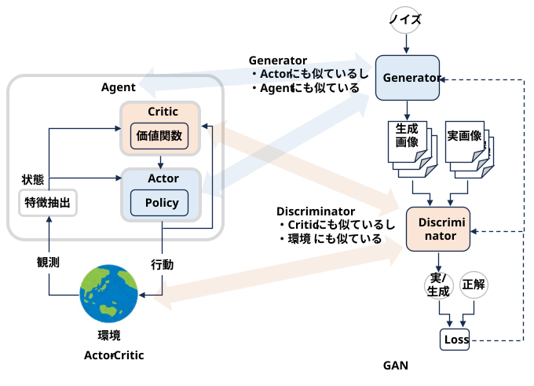
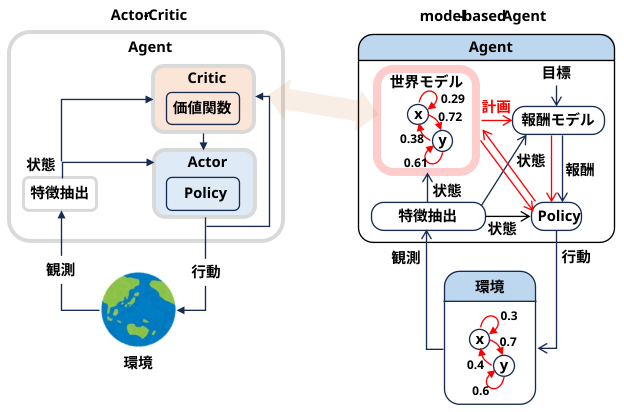
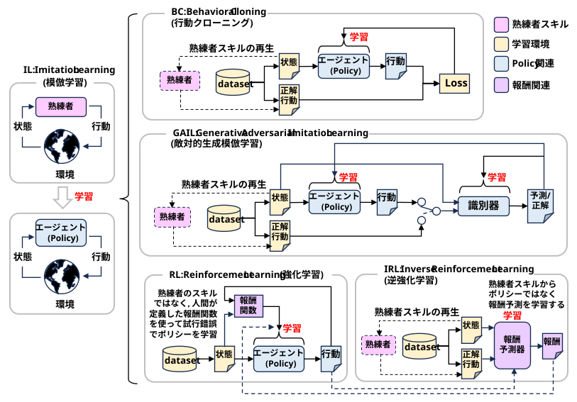
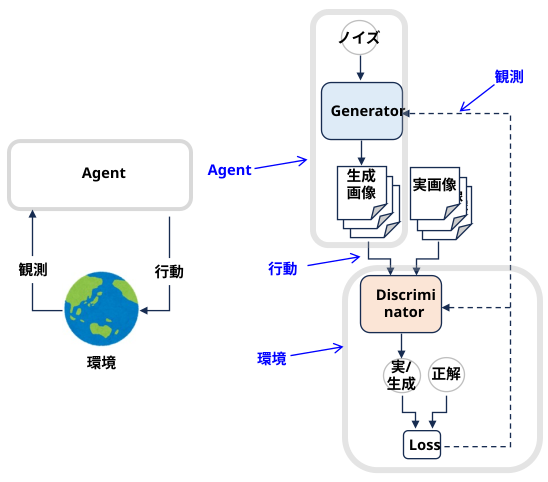
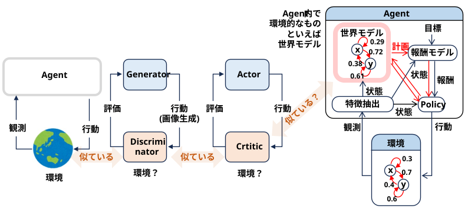

GAN と Actor Critic は敵対するモジュールを同時に学習するところが似ていると思い、AIモードに整理して貰った
(ら、GAN のDenominator と強化学習の環境も似ている、Critic と世界モデルも似ている、と色々似ていた･･･)。


どちらのアルゴリズムも、システムが 「実際にアウトプットを出すネットワーク」 と、「そのアウトプットが良いか悪いかを評価するネットワーク」 の2つに完全に役割が分かれています。その対応関係は以下の通りきれいに一致します。
Actor (アクター：役者) \(\simeq\) Generator (生成器)
目的を達成するために、実際に「行動（Action）」や「データ（データ生成）」を出力する役割。
Critic (クリティック：批評家) \(\simeq\) Discriminator (識別器)
出力されたものがどれくらい良いかを「評価」する役割。
Actor-Critic
状態に対してその行動が将来どれくらい報酬（価値）を生むかを予測・評価する。
GAN
入力されたデータが「本物（リアル）」か「偽物（アクターが作ったもの）」かを評価（識別）する。
どちらのモデルも、Actor（Generator）は環境から直接正解を教えてもらうわけではありません。
・ GAN: Generatorは「本物の画像そのもの」を見て学習するのではなく、Discriminatorの「今のは偽物っぽいぞ（勾配情報）」というフィードバックを頼りに、どうすれば騙せるかを学習します。
・ Actor-Critic: Actorは「どの行動が100点満点か」を知りません。Criticが算出した「今の行動は予想より良かった／悪かった（方策勾配／TD誤差）」という評価フィードバックを受けて、自分の行動パターンを修正します。
つまり、両者とも「評価側の目（評価基準）が肥えるにつれて、行動側の腕前も上がる」というブートストラップ的な進化プロセスを踏みます。
通常の教師あり学習（画像認識など）では、目指すべき「正解ラベル（ゴール）」は常に固定されています。しかし、Actor-CriticとGANでは、学習のゴールが常に動き続けます。
・ GAN: Generatorが上手くなると、Discriminatorの識別基準もより厳しくアップデートされます（ゴールが動く）。
・ Actor-Critic: Actorの行動が変わると、訪れる状態や得られる報酬の予測が変わるため、Criticの評価基準（価値関数）も常にアップデートされます（ゴールが動く）。
この「一方が変わると他方の正解も変わる」という非定常性（Non-stationarity）を持つため、どちらも学習の初期設定やハイパーパラメータの調整が非常に繊細で、学習が不安定になりやすいという共通の弱点・特徴を持っています。
・ GAN： モデル崩壊 (同じような画像しか生成しなくなる)
・ Actor-Critic： ポリシー崩壊 (同じ行動しかとらなくなる、ランダムな無駄な行動をとる)、報酬ハッキング (目的に沿わない報酬だけを稼ぐ行動をとる)
ゴールが動く → カリキュラム学習に似ている？
「徐々に難しいゴールに挑む」という点で同じですが、そのアプローチが自動（共進化）か手動（設計）かという大きな違いがあります。
「GANやActor-Criticの『自動で動くゴールポスト』の動きを、カリキュラム学習の手法を使って人間が優しくコントロールし、学習を安定させる」という、両者のいいとこ取りをした研究（Self-Paced Learningなど）もたくさん行われています。
「非監視下環境デザイン（Unsupervised Environment Design: UED）」や「オープンエンド型学習（Open-Ended Learning）」と呼ばれています。
AI自身が自分にとって『ちょうどいい難易度の迷路』を自動生成して自習する仕組み（POETなどの環境自動生成手法）など、面白い発展形があります。
：
最適化の視点で見ると、どちらも「片方の損失関数を最小化し、もう片方の損失関数を最大化する」というサドルポイント（鞍点・ゲーム理論のナッシュ均衡）を探す数学的構造を持っています。
実際、模倣学習の文脈において、人間のお手本データから学習する「敵対的生成模倣学習（GAIL: Generative Adversarial Imitation Learning）」という手法では、Actor-Criticの仕組みをそのままGANの数式に変換して処理するアプローチがとられています。

これが最も根本的なアルゴリズム上の違いです。
Actor-Critic（強化学習）
時間軸があり、自分の行動が未来に影響する
マルコフ決定過程（MDP）という時間的なつながりの中で動きます。Actorが「右に進む」という行動（Action）をとると、環境の「状態（State）」が変わり、未来に得られる報酬や次に取れる行動が変化します。つまり、「将棋の先読み」のように、現在の行動が未来の状態を左右する世界です。
GAN（生成モデル）
1発勝負であり、ステップの概念がない
GANのGeneratorのタスクは、ノイズ（乱数）から「1枚の完成した画像（またはデータ）」をパッと一瞬で作り出すことです。Generatorが特定のピクセルをどう描いたかが、次のピクセル生成に「環境の変化」として影響を及ぼすような、時間的な状態遷移の概念はありません。
Actor-Critic: 制御できない「外部環境」が存在する
ネットワークの外部に、ゲームのルールや物理法則といった「環境」が存在します。ActorやCriticは、環境がどう動くかの完全な数式（遷移確率）を知りません。実際に動いてみて、環境から返ってくる「状態」や「報酬」を観測しながら手探りで学習します。
GAN: すべてがニューラルネットワーク内で完結する
GANには外部の物理環境はありません。「本物のデータセット」と「Generator」「Discriminator」の3つだけで世界が閉じています。Discriminatorの評価（誤差）は微分可能（Differentiable）な数式としてGeneratorに直接フィードバック（バックプロパゲーション）されるため、環境を挟まないダイレクトな最適化が可能です。
どちらも「Critic（批評家）」という役割を持っていますが、見ている対象が異なります。
Actor-CriticのCritic: 「未来の予測（価値）」を評価する
目の前の行動が本物か偽物かを見極めるのではなく、「現在の状態から、将来どれくらいのトータル報酬（スコア）が得られそうか」という未来の期待値（価値：Value）を予測・評価します。
GANのDiscriminator（Critic）: 「本物（リアル）か偽物（フェイク）か」を評価する
入力されたデータ（画像など）が、用意された本物のデータセットに含まれるものか、それともGeneratorが作った偽物（分布の外にあるもの）かを0〜1の確率で二値識別します（WGANなどでは文字通り「Critic」と呼ばれ、本物らしさのスコアを出力します）。
Actor-Critic: 最適な「行動ルール（方策：Policy）」を手に入れる
目的は「データを作ること」ではなく、「どんな状況（状態）に陥っても、常に最適な判断・行動ができるルール」を確立することです。自動運転の制御や、ゲームのAIプレイヤーの構築などがゴールです。
GAN: 本物そっくりの「データ（画像・音声など）」を手に入れる
目的は「行動の最適化」ではなく、「実在しないけれど、本物に見えるリアルなコンテンツ」を新しく生成することです。AIイラストの生成や、音声合成などがゴールです。
(蛇足)GAN の Discriminator を強化学習の環境とみなすような研究はない？
(AIモード)GANの構造（Generator vs Discriminator）は、強化学習（RL）の「エージェントが環境からのフィードバック（報酬）を得て行動を最適化するプロセス」と本質的に高い数学的親和性を持っています。具体的には、以下のような代表的な研究分野や手法が確立されています
逆強化学習（Inverse RL）との数学的等価性の証明
2016年にChelsea Finnらの研究グループが発表した論文『A Connection between Generative Adversarial Networks, Inverse Reinforcement Learning, and Energy-Based Models』によって、GANと「最大エントロピー逆強化学習（MaxEnt IRL）」が本質的に等価（同じ数式で表せる）であることが証明されました。
この発見により、GAN の Discriminator は「エージェントにとっての人工的な環境（報酬評価器）」そのものであることが理論的に裏付けられました。
(蛇足)
(じゃあ 「2. 「環境（Environment）」というブラックボックスの存在」 は違いじゃないじゃん･･･)
(似ているのは、GAN と 強化学習 だった･･･Generator \(\simeq\)
エージェント、Discriminator \(\simeq\) 環境)

近年の動向：GAN-RL連携と環境生成（Environment Generation）
RELEVAGAN / ObjectiveGAN
サイバーセキュリティ（ボットネット検出の回避）やレコメンドシステムにおいて、強化学習エージェントが攻撃や行動を仕掛ける先の「敵対的な環境」としてDiscriminatorを設定する研究です。
環境ジェネレータ（Environment Generator）
自動運転やロボティクスのシミュレーションにおいて、エージェントを訓練するための「リアルなステージ（環境）」そのものをGANで生成し、Discriminatorにそのステージの妥当性を評価させる特許や研究も存在します。
このように、「Discriminatorを環境（報酬）とみなす」という視点は、思いつきのアイデアに留まらず、「敵対的模倣学習（GAIL）」や「逆強化学習（IRL）」の基盤として広く実用・研究化されているメジャーな領域です。
(蛇足)
(Discriminator\(\simeq\) Critic、Discriminator \(\simeq\) 環境 ということは Critic \(\simeq\) 環境？？？)
(強化学習だと、エージェント内の環境っぽいものは世界モデル･･･)

世界モデルは環境を予測し、Criticは行動を評価する、けど似ている気もする
(AIモード)その直感は、実は強化学習の最先端の数理や、脳科学の視点から見ても非常に正しいものです。
「予測」と「評価」は言葉こそ違いますが、数式を紐解いたり、ニューラルネットワークの構造を抽象化していくと、「本質的にはどちらも同じ『環境の因果関係』を学んでいる」という共通点に突き当たります。 なぜ「似ている」と感じるのか、その直感が正しい理由を3つの視点で深掘りします。
1. 数学的な地続き：Criticは世界モデルの「超・圧縮版」である
世界モデルは、未来の「具体的な状態（画面のピクセル、ロボットの関節の角度など）」を予測します。
一方で、Criticが予測する「価値（Value）」は、「未来の具体的な状態に紐づく報酬を、時間で割引しながら全部足し算したもの」です。 つまり、数式上は以下のような関係になります。
• 世界モデル： \(\text{未来の具体的な状態 } s_{t+1}, s_{t+2}, s_{t+3} \dots \text{ を全部詳細に予測する}\)
• Critic： \(\text{それらの未来で得られる報酬 } r_{t+1} + \gamma r_{t+2} + \gamma^2 r_{t+3} \dots \text{ を、1つの数字にギュッと凝縮して一発で予測する}\) Criticは、世界モデルが予測するであろう膨大な未来のシナリオを、「最終的な損得スコア」という1次元の指標にまで超圧縮して先読みしている存在です。予測している対象（解像度）が違うだけで、やっていることはどちらも「未来の予測」です。
(「続きを聞きますか？」「はい」で 1, 2, 3 の説明が延々と続く･･･この辺でオーバーフロー･･)2. 表現学習（特徴量）の共通化：脳の同じ場所を使っている
近年の世界モデル（DreamerV3 [1] など）の実装を見ると、世界モデルとCriticは別々に独立して動いているわけではありません。 多くの場合、カメラ画像などの複雑な環境情報を「潜在空間（Latent Space）」と呼ばれるベクトルに変換するニューラルネットワーク（エンコーダー）を共有しています。
• 世界モデルは、その潜在空間を使って「次の瞬間の潜在空間」を予測します。
• Criticは、その潜在空間を使って「現在の価値」を予測します。 「環境がどうなっているか、どう変化するか」を理解するための根底のネットワーク（特徴量抽出）が同じであるため、構造的・表現的にこの2つは双子のように酷似することになります。
3. 「後悔（TD誤差）」から学ぶ仕組みが全く同じ
世界モデルもCriticも、学習のメカニズムが本質的に同じです。
• 世界モデルの学習： 「こうなると思った（予測）」と「実際はこうだった（現実）」のズレ（予測誤差）を最小化する。
• Criticの学習： 「これくらい得すると思った（価値予測）」と「実際はこれくらい得した（現実の報酬＋次の状態の価値）」のズレ（TD誤差）を最小化する。 どちらも「自分の予測と、環境から返ってきた現実のギャップ（サプライズ）」をエネルギーにして自分をアップデートします。この「予測器としての自己修正プロセス」が共通していることも、似ていると感じる大きな要因です。
結論：2つを繋ぐミッシングリンク「後継表現（Successor Representation）」
この「似ている」という直感を完璧に理論化した Successor Representation（SR：後継表現） という有名な研究（Dayan, 1993 / 近年再注目）があります。
SRは、「現在の行動をとったとき、未来にどんな状態に『どれくらいの頻度で滞在するか』の予測（＝世界モデル的な予測）」をあらかじめ計算しておき、そこに「各状態の報酬（＝Critic的な評価）」をパズルのようにガッチャンコとはめ込むことで、一瞬で価値関数（Critic）を計算する手法です。
この理論が示す通り、Criticの内実（中身）は世界モデルそのものであり、世界モデルの予測に「報酬の重み」を掛け算した影のような存在がCriticなのです。
後継表現（Successor Representation: SR）は、1993年にPeter Dayanが提案し、近年「世界モデル」と「強化学習（Critic）」をつなぐミッシングリンク、さらには脳科学における「海馬」の認知地図の正体として爆発的に再注目されている理論です。 なぜ「世界モデル（予測）」と「Critic（評価）」が似ているのか、その答えがこの理論の中に完全にあります。
1. SRの核心：世界モデルとCriticの「いいとこ取り」
強化学習には元々、以下の2つの大きなアプローチ（モデルベースとモデルフリー）があり、それぞれ一長一短でした。
• モデルフリー（Criticのみ）
過去の経験から「この状態は70点」と数字（価値）だけを覚える。計算は一瞬で終わるが、ゴール（報酬）の位置が変わっただけで、全ての点数を一から再学習（評価し直し）しなければならない。
• モデルベース（世界モデル）
「右に行ったら木があって、その奥に川がある」と環境のつながりを全部覚える。ゴールが変わっても頭の中でシミュレーションして柔軟に対応できるが、毎回「未来の予測」を計算するため脳の計算負荷が重すぎる。
後継表現（SR）は、この2つの長所を数式上でドッキングさせました。 SRでは、Criticの予測（価値関数 \(V\)）を、次の2つの要素に完全に分離して計算します。
\(\text{Criticの評価 }(V)=\text{【SR（世界モデル的予測）】}\times \text{【報酬のベクトル（評価）】}\)
① 【SR：後継表現】（環境の予測）
「いまここにいるとき、将来的にどの状態に、どれくらいの頻度で滞在することになるか」の未来の予測値（期待値）をマトリクス（行列）として保持します。これは「報酬（得・損）」のことは一切考えず、純粋に環境のつながり（遷移のしやすさ）だけを予測したものです。
② 【報酬ベクトル】（現在の評価）
「それぞれのマス（状態）に、いくつのリンゴ（報酬）が落ちているか」という、その瞬間の事実だけのリストです。
2. なぜこれが画期的なのか？
この2つを分離して持っておくと、「世界モデルのように柔軟なのに、Criticのように一瞬で計算が終わる」という魔法のようなことが起きます。 例えば、迷路の中で「ゴールの場所（報酬の位置）」が突然変わったとします。
• 普通のCritic： 迷路の全マスの価値（点数）が書き換わるため、もう一度何度も迷路を歩き回って学び直す必要があります。
• SR： 迷路の形（環境の予測＝SR）は変わっていないので、①はそのまま使い回せます。②の「新しいゴールの位置」だけを1箇所書き換え、①と②をガッチャンコと掛け算するだけで、一瞬にして迷路全体の新しいCritic（価値関数）が完成します。 つまり、「環境の予測（世界モデル）」をベースの骨組みとして持っているからこそ、一瞬で「行動の評価（Critic）」をハッキングするように導き出せるのです。これが、あなたが「2つは似ている」と感じた根本的な理由です。
3. 脳科学との繋がり：海馬の「プレイスセル（場所細胞）」の正体
近年の神経科学の研究（Stachenfeld et al., 2017など）により、人間の脳の「海馬（主に場所を司る部位）」は、まさにこのSR（後継表現）を計算しているという強力な証拠が見つかりました。
脳には、特定の場所にいくとパチパチと発火する「プレイスセル（場所細胞）」があります。従来これは、単に「いま自分がどこにいるか」を示すGPSのようなものだと思われていました。
しかし詳細に調べると、その細胞の発火パターンは「いまの場所」だけでなく、「ここから次に進みやすい未来の場所」に向かって、じわっと滲むように発火していることが分かりました。さらに、部屋に壁（障害物）を置くと、その滲み方（発火パターン）が壁を避けるようにリアルタイムに変形したのです。
これは、脳が単に現在地を記録しているのではなく、「現在の場所から、未来にどんな状態へ遷移するか（＝SR）」を常に予測・表現していることの決定的な証拠です。
まとめ
• 世界モデルは、未来の「具体的な絵や状態」を予測する。
• SRは、未来の「状態の滞在頻度（つながり）」を予測する。
• Criticは、SRに「報酬」を掛け算して、未来を1つの数字に圧縮する。
脳や最先端のAIの中では、「世界モデル（予測）のネットワーク」がそのまま変形・圧縮されることで「Critic（評価）のネットワーク」が生み出されていると言えます。
Deep SR（Deep Successor Representation / 深層後継表現）とは、Peter Dayanの「後継表現（SR）」の理論に、ニューラルネットワーク（深層学習）を融合させた強化学習の手法です[2]。
オリジナルのSRは「迷路のマス目（碁盤の目）」のような小さくて単純な離散空間でしか計算できませんでした。これに対しDeep SRは、カメラ画像（ピクセル）のような複雑で高次元な環境でもSRの恩恵（一瞬での環境適応や報酬の変化への強さ）を受けられるように拡張したものです[2, 3]。
その具体的な仕組みと、なぜこれが強力なのかを分かりやすく解説します。
1. Deep SRのネットワーク構造
Deep SR（代表的なアーキテクチャであるDSR: Deep Successor Reinforcement Learningなど）は、主に3つのパーツ（ニューラルネットワーク）から構成されています。
①エンコーダー（表現学習: φ）
• 入力された高次元データ（例：ゲームの画面画像）を、本質的な特徴だけを抽出したコンパクトな「潜在ベクトル（特徴量空間 φ(s)）」に圧縮します。
②SRネットワーク（予測器: M）
• 現在の潜在ベクトル φ(s) と行動 a を入力として、「将来、どんな特徴量（潜在ベクトル）を持つ状態に、どれくらいの頻度で滞在するか」という未来の傾向を予測します。この出力を後継特徴量（Successor Features: SF）とも呼びます。
③報酬デコーダー（評価器: w）
• 各特徴量に対して「どれくらいの報酬（リンゴ）が紐づいているか」を表す線形な重みベクトルです。
2. どうやって「予測（世界モデル）」から「評価（Critic）」を作るのか？
Deep SRにおける行動の評価（Q値 / Critic）の計算は、驚くほどシンプルに以下の数式で行われます。
\(Q(s,a)=M(s,a)\cdot w\)
• M(s, a) ：未来の滞在予測（世界モデル的なネットワークの出力）
• w ：現在の報酬の重み（評価器の出力）
未来の予測ベクトル（M）と、現在の報酬の重み（w）の内積（掛け算）を計算するだけで、瞬時に行動の評価値（Q値）が導き出されます[3]。
3. Deep SRの何がそんなに凄いの？
通常のDeep Q-Network (DQN) などのCriticは、画面画像から直接「点数（スカラー値）」を予測するため、中身がブラックボックスになりがちです。しかし、Deep SRには以下のような圧倒的なメリットがあります。
① ゴール（報酬）の急な変更に一瞬で適応できる（Zero-shot Transfer）
例えば、あるゲームで「赤いコインを集める」というルールで学習したAIがあるとします。突然ルールが「青いコインを集める」に変更された場合：
• 普通のDQN（Critic）：画面から点数へのマッピングがすべて変わるため、ネットワーク全体を最初から長時間をかけて再学習（ファインチューニング）する必要があります。
• Deep SR：ステージの構造や敵の動き（M）は変わっていないため、報酬デコーダー（w）の重みをほんの数回アップデートするだけで、一瞬で「青いコインを目指すAI」へと生まれ変わることができます[3]。
② 探索（Exploration）が圧倒的にスマートになる
Deep SRが持つ未来の予測マトリクス（M）を監視すると、「エージェントがまだ行ったことがない、予測のつかない未知のエリア（特徴空間）」が数理的に一発で分かります。これを利用して、「まだ見ぬ未来の表現が含まれる場所へ進む」という知的な探索（内的報酬）を効率的に行うことができます。
③ 知識の「足し算」ができる
複数の異なるタスク（例：「敵を倒す」「アイテムを拾う」「ゴールへ向かう」）の報酬ベクトル（w₁, w₂, w₃）を別々に学習しておけば、それらを足し算（\(w_{total} = w_1 + w_2 + w_3\)）するだけで、「敵を倒しつつアイテムを拾ってゴールへ向かう」という複合的なタスクを、追加の訓練なしで実行できます。
まとめ
Deep SRは、あなたが直感した「世界モデル（環境の予測）」と「Critic（行動の評価）」が、ニューラルネットワークの中でいかに地続きで、表裏一体であるかを体現したような美しく強力なフレームワークです。
このDeep SRや後継表現の考え方は、近年ではロボティクスの「多目的タスクの切り替え」や、大規模言語モデル（LLM）の「コンテキスト理解の数理モデル」としても応用され始めています。